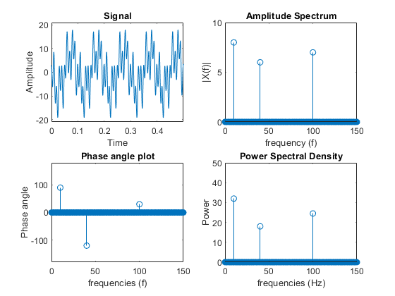
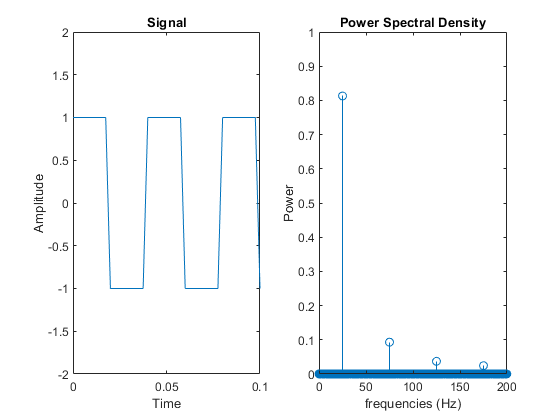

Pratik Ravikumar Sanghavi (2017AAPS0394G)
Contents
- EXPERIMENT 1: Single Sided Amplitude, Phase and Power Spectrum for the specified signal
- Initialization
- Signal Definition Segment
- Signal Generation Segment
- FFT Computation and Specification of Magnitude and Phase of resulting sequence
- Plot Generation Segment
- EXPERIMENT 2: Time Domain and Single Sided Power Spectral Density Plot of Square Wave of 50% Duty Cycle and 25 Hz Frequency
- Initialisation
- Signal Definition Segment
- Signal Generation Segment
- FFT Computation
- Plot Generation Segment
EXPERIMENT 1: Single Sided Amplitude, Phase and Power Spectrum for the specified signal
Initialization
clear all; close all; clc;
Signal Definition Segment
Amplitudes
A1=8; A2=6; A3=7; % Frequencies fc1=10; fc2=40; fc3=100; % Phase constant theta1=pi/2; theta2=-2*pi/3; theta3=pi/6; % Sampling Frequency k=32; fs=k*max([fc1 fc2 fc3]); % Duration t=0:1/fs:32767/fs;
Signal Generation Segment
xn=A1*cos(2*pi*fc1*t+theta1)+A2*cos(2*pi*fc2*t+theta2)+A3*cos(2*pi*fc3*t+theta3);
FFT Computation and Specification of Magnitude and Phase of resulting sequence
N=6400; % frequency specification f=(0:1:(floor(N/2)-1)).*fs/N; %FFT of signal Xk=fft(xn,N); Xkssb=Xk(1:N/2); Xkssb=Xkssb./(N/2); %Magnitude specification Xkssbm=abs(Xkssb); %Angle Specification Xkssbp=angle(Xkssb); Xkssbp=Xkssbp.*(180/pi); Xkplot=zeros(length(Xkssbp)); c1=find(f==10); c2=find(f==40); c3=find(f==100); Xkplot(c1)=Xkssbp(c1); Xkplot(c2)=Xkssbp(c2); Xkplot(c3)=Xkssbp(c3); %Power Spectral Density Pssb=(Xkssb.*conj(Xkssb))/2;
Plot Generation Segment
figure(1) subplot(221) plot(t,xn); axis([0 0.5 -21 21]) xlabel('Time'); ylabel('Amplitude'); title('Signal'); subplot(222) stem(f,Xkssbm); axis([0 150 0 10]); title('Amplitude Spectrum'); xlabel('frequency (f)'); ylabel('|X(f)|'); subplot(223) stem(f,Xkplot); axis([0 150 -180 180]); title('Phase angle plot'); xlabel('frequencies (f)'); ylabel('Phase angle'); subplot(224) stem(f,Pssb); axis([0 150 0 50]); title('Power Spectral Density'); xlabel('frequencies (Hz)'); ylabel('Power');
EXPERIMENT 2: Time Domain and Single Sided Power Spectral Density Plot of Square Wave of 50% Duty Cycle and 25 Hz Frequency
Initialisation
close all
Signal Definition Segment
Frequency
fc=25; % Sampling frequency k2=16; fs2=k2*fc; %Duration t2=0:1/fs2:32767/fs2;
Signal Generation Segment
xn2=square(2*pi*fc*t2,50);
FFT Computation
N2=1600; %frequency f2=(0:1:(floor(N2/2)-1)).*fs2/N2; %FFT of signal Xk2=fft(xn2,N2); Xkssb2=Xk2(1:N2/2); Xkssb2=Xkssb2./(N2/2); %Power Spectral Density Pssb2=(Xkssb2.*conj(Xkssb2))/2;
Plot Generation Segment
figure(2) subplot(121) plot(t2,xn2); axis([0 0.1 -2 2]) xlabel('Time'); ylabel('Amplitude'); title('Signal'); subplot(122) stem(f2,Pssb2); axis([0 200 0 1]); title('Power Spectral Density'); xlabel('frequencies (Hz)'); ylabel('Power');